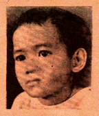

THE SUNDAY TIMES
MAGAZINE
THE SUNDAY TIMES
MAGAZINE
THE SUNDAY TIMES
MAGAZINE
January 25, 1948
SKIN GRAFTING
Local surgeon patches up boy's broken cheek in first plastic operation in Manila
A hole in the cheek, a missing lip or a cut-off nose used to make its owner
shrink self-consciously from company. Now, however, he may have such
physical deformities patched up safely.
As a matter of fact, skin transplantation in plastic repair, which modern surgery makes use of to correct disfigurements due to various causes including shrapnel wounds, is not new in the Philippines. Dr. Jaime E. Laico of the Philippine General Hospital has been resorting to the tube flap method as early as 1940.
His first case (probably the first in Philippine plastic surgery) was a 4-year-old boy who had an inch-wide hole in the left cheek due to cancrum orris (rotting of the flesh) as a complication of measles. The patient's tongue, gums, and teeth could be seen (photo at extreme left) through the opening, out of which saliva constantly leaked.
If the boy were older, skin for transplant could have been taken from his left arm, and the operation would have been simpler. Since nobody could tell how long he could hold his left arm immobile to his left cheek, the longer but safer method had to be performed.
The operation took several stages (photos below and on the next page), a longer period due to lack of facilities -- a little over a year -- and a lot of patience. Nevertheless, when it was over, the boy (extreme right) was no longer a pitiful sight.
Skin for transplant was finally selected from the left side of the chest. That being looser than any other part of the body below the neck, the patient would not carry a disfiguring scar.
Two longitudinal incisions, each about 5 inches long and 2-1/2 inches apart were made, the skin undermined, and its edges sutured posteriorly. The raw surface created was also approximated by interrupted stitches after its edges had been undermined. Thus a vertical tube flap (1), not unlike the handle of a suitcase, was created, its two ends being the only portions attached to the patient's body.
In about a month's time, the flap was ready for its creeping operations upward. Cut down to the subcutaneous layer, the lower end of the flap was loosened from its place and turned up to be attached to a centimeter-wide incision also cut deep into the subcutaneous layer above the left nipple (2).
After another month, the flap went a step higher to the infraclavicular region (3). Similar operations followed, with the tube nearing its objective after going from clavicle (4), to shoulder (5), and up to the neck (6).
The next stage carried the flap to the mastoid region, then to the posterior angle of the scar close to the maxilla (7). The lower end was next detached and transplanted below the hole. From here, the upper end of the flap was incised at the edge (8). The scar close to the infraorbital region was cut off and to it the loose end of the tube was sutured doubly; inner edge to inner edge, outer edge to outer edge of the wound (9).
Union of the tube flap with the infraorbital region took place within the week, but left unavoidable skin excess (10), which was trimmed off after two weeks. The edges of the remaining flap were sutured by two layers.
Finishing touches consisted of excising the depressed scars around the transplant and leveling the grafted skin to the cheek.